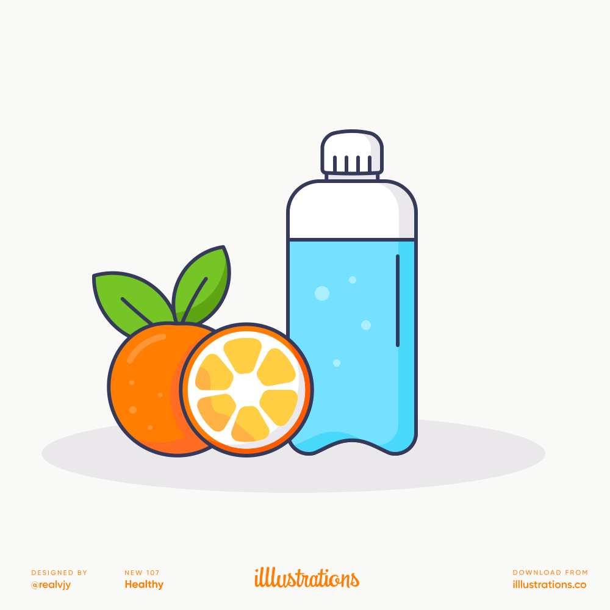
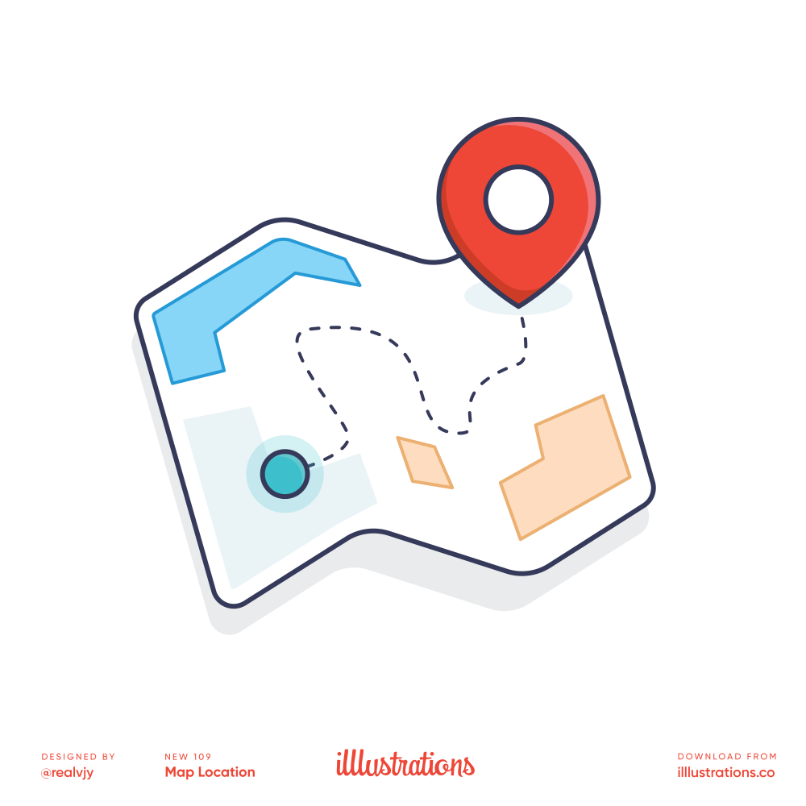
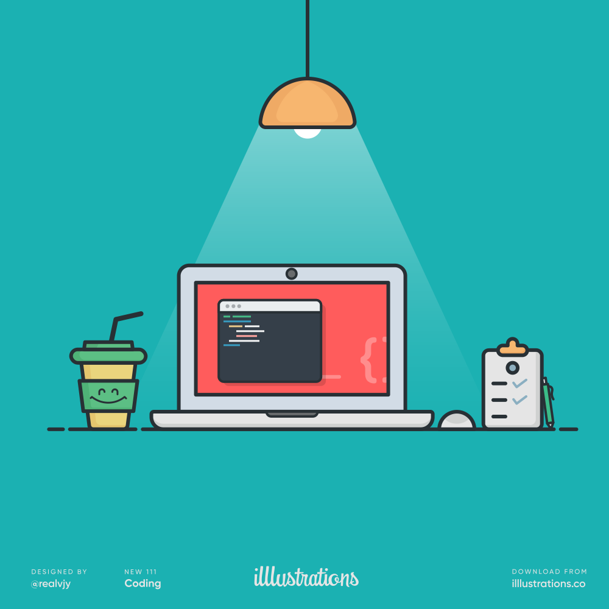

<ion-header>
</ion-header>

<ion-content scrollY="false">
	<swiper-container
		#swiper
		(afterinit)="swiperReady()"
		(slidechange)="swiperSlideChanged($event)"
	>
		<swiper-slide>
			<div>
				
				
				<div class="text-center pt-10">
					<h1 class="text-2xl pb-4">Step 1</h1>
					<p class="text-sm">Descriptive words about this feature</p>
				</div>
			</div>
		</swiper-slide>
		<swiper-slide>
			<div>
				
				
				<div class="text-center pt-10">
					<h1 class="text-2xl pb-4">Step 2</h1>
					<p class="text-sm">Descriptive words about this feature</p>
				</div>
			</div>
		</swiper-slide>
		<swiper-slide>
			<div>
				
				
				<div class="text-center pt-10">
					<h1 class="text-2xl pb-4">Step 3</h1>
					<p class="text-sm pb-12">Descriptive words about this feature</p>
					
					<ion-button type="button" color="secondary" (click)="start()">Get Started</ion-button>
				</div>
			</div>
		</swiper-slide>
	</swiper-container>
	
	<div class="navigator" *ngIf="!hideNavigation">
		<ion-button type="button" color="primary" fill="clear" (click)="start()">Skip</ion-button>
		<ion-button type="button" color="primary" fill="clear" (click)="next()">Next</ion-button>
	</div>
</ion-content>
